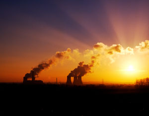

For years now, many members of Congress have insisted that cutting carbon emissions was difficult, if not impossible. It is not.
During the two years since 2007, carbon emissions have dropped 9 percent. While part of this drop is from the recession, part of it is also from efficiency gains and from replacing coal with natural gas, wind, solar and geothermal energy.
The United States has ended a century of rising carbon emissions and has now entered a new energy era - one of declining emissions. Peak carbon is now history. What had appeared to be hopelessly difficult is happening at amazing speed.
For a country where oil and coal use have been growing for more than a century, the fall since 2007 is startling. In 2008, oil use dropped 5 percent, coal 1 percent, and carbon emissions by 3 percent. Estimates for 2009, based on U.S. Department of Energy (DOE) data for the first nine months, show oil use down by another 5 percent. Coal is set to fall by 10 percent. Carbon emissions from burning all fossil fuels dropped 9 percent over the two years.
Beyond the cuts already made, there are further massive reductions in the policy pipeline. Prominent among them are stronger automobile fuel-economy standards, higher appliance efficiency standards, and financial incentives supporting the large-scale development of wind, solar and geothermal energy. (See data on the Earth Policy Institute website.)
Efforts to reduce fossil fuel use are under way at every level of government - national, state and city - as well as in corporations, utilities and universities. And millions of climate-conscious, cost-cutting Americans are altering their lifestyles to reduce energy use.
For its part, the federal government - the largest U.S. energy consumer, with some 500,000 buildings and 600,000 vehicles - announced in early October 2009 that it is setting its own carbon-cutting goals. These include reducing vehicle fleet fuel use 30 percent by 2020, recycling at least 50 percent of waste by 2015, and buying environmentally responsible products.
Electricity use is falling partly because of gains in efficiency. The potential for further cuts is evident in the wide variation in energy efficiency among states. The Rocky Mountain Institute calculates that if the 40 least efficient states were to reach the electrical efficiency of the 10 most efficient ones, national electricity use would be reduced by one third. This would allow the equivalent of 62 percent of the country’s 617 coal-fired power plants to be closed.
Actions are being taken to realize this potential. For several years, the DOE failed to write the regulations needed to implement appliance efficiency legislation that Congress had already passed. Within days of taking office, President Obama instructed the agency to write the regulations needed to realize these potentially vast efficiency gains as soon as possible.
The energy efficiency revolution that is now under way will transform everything from lighting to transportation. With lighting, for example, shifting from incandescent bulbs to the newer light-emitting diodes (LEDs), combined with motion sensors to turn lights off in unoccupied spaces, can cut electricity use by more than 90 percent. Los Angeles, for example, is replacing its 140,000 streetlights with LEDs - and cutting electricity and maintenance costs by $10 million per year.
The carbon-cutting movement is gaining momentum on many fronts. In July, the Sierra Club - coordinator of the national anti-coal campaign - announced the 100th cancellation of a proposed plant since 2001. This battle is leading to a de facto moratorium on new coal plants. Despite the coal industry's $45 million annual budget to promote “clean coal,” utilities are giving up on coal and starting to close plants. The Tennessee Valley Authority (TVA), with 11 coal plants (average age: 47 years) and a court order to install more than $1 billion worth of pollution controls, is considering closing its plant near Rogersville, Tenn., along with the six oldest units out of eight in its Stevenson, Ala., plant.
TVA is not alone. Altogether, some 22 coal-fired power plants in 12 states are being replaced by wind farms, natural gas plants, wood chip plants, or efficiency gains. Many more are likely to close as public pressure to clean up the air and to cut carbon emissions intensifies. Shifting from coal to natural gas cuts carbon emissions by roughly half. Shifting to wind, solar and geothermal energy drops them to zero.
State governments are getting behind renewables big time. Thirty-four states have adopted renewable portfolio standards to produce a larger share of their electricity from renewable sources over the next decade or so. Among the more populous states, the renewable standard is 24 percent in New York, 25 percent in Illinois, and 33 percent in California.
While coal plants are closing, wind farms are multiplying. In 2008, a total of 102 wind farms came online, providing more than 8,400 megawatts of generating capacity. Forty-nine wind farms were completed in the first half of 2009, and 57 more are under construction. More importantly, some 300,000 megawatts of wind projects (think 300 coal plants) are awaiting access to the grid.
U.S. solar cell installations are growing at 40 percent a year. With new incentives, this rapid growth in rooftop installations on homes, shopping malls and factories should continue. In addition, some 15 large solar thermal power plants that use mirrors to concentrate sunlight and generate electricity are planned in California, Arizona and Nevada. A new heat-storage technology that enables the plants to continue generating power for up to six hours past sundown helps explain this boom.
For many years, U.S. geothermal energy was confined largely to the huge Geysers project north of San Francisco, with 850 megawatts of generating capacity. Now the United States, with 132 geothermal power plants under development, is experiencing a geothermal renaissance.
After their century-long love affair with the car, Americans are turning to mass transit. There is hardly a U.S. city that is not either building new light rail, subways or express bus lines or upgrading and expanding existing ones.
As motorists turn to public transit, and also to bicycles, the U.S. car fleet is shrinking. The estimated scrappage of 14 million cars in 2009 will exceed new sales of 10 million by 4 million. This shrinkage will likely continue for a few years.
Oil use and imports are both declining. This will continue as the new fuel economy standards raise the fuel efficiency of new cars 42 percent and light trucks 25 percent by 2016. And because 42 percent of the diesel fuel burned in the rail freight sector is used to haul coal, falling coal use means falling diesel fuel use.
But the big gains in fuel efficiency will come with the shift to plug-in hybrids and all-electric cars. Not only are electric motors three times more efficient than gasoline engines, but they also enable cars to run on wind power at a gasoline-equivalent cost of 75 cents a gallon. Almost every major carmaker will soon be selling plug-in hybrids, electric cars, or both.
In this new energy era, carbon emissions are declining, and they will likely continue to do so because of policies already on the books. We are headed in the right direction. We do not yet know how much we can cut carbon emissions because we are just beginning to make a serious effort. Whether we can move fast enough to avoid catastrophic climate change remains to be seen.
|
 ISTOCKPHOTO In July, the Sierra Club - coordinator of the national anti-coal campaign - announced the 100th cancellation of a proposed coal-fired power plant since 2001. |
|
|